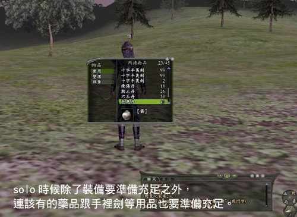
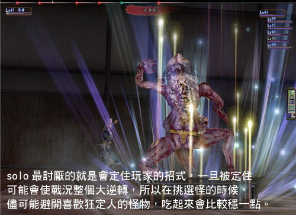
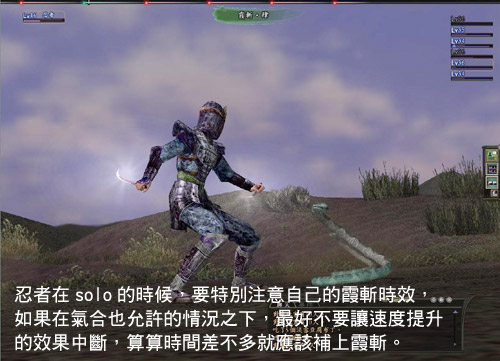
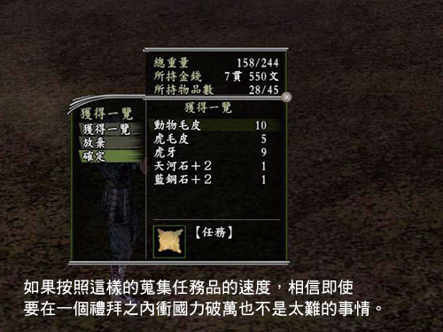
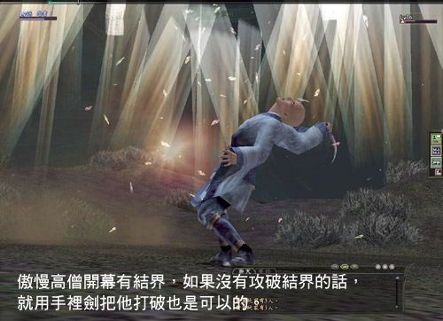

除了組黨之外，還有另外一種升級的方法，就是 solo 。
雖然說這是網路遊戲，組黨本來就是遊戲的主要目的，可是《信 ON 》的世界裡，想要一個人藉由 solo 來長大並非完全不可能。
在找不到徒黨或者是想要自由的進行遊戲的玩家們，不妨可以試試看自己去 solo ，
說不定 solo 的效率還會好過組黨，如此一來又可以讓玩家們多了一條升級的道路。
前衛 solo 的準備要件
• 裝備要足夠
沒有隊友可以仰賴，一切得要靠自己！
這就是 solo 最為現實的地方，攻防必須調整到一定的程度才能夠有比較好的收入。
另外需要注意的是， solo 對裝備耗損程度是相當驚人的！
所以如果太好的裝備拿來 solo 後，可能在維修的時候會讓玩家欲哭無淚，所以挑選合適的裝備是 solo 的最基本工作。
• 道具要足夠
除了裝備要準備足夠之外，當然藥品也要準備充足。除了增強自身能力的強壯丹之外，也需要準備一些可以回復的療傷丹等藥品。
基本上 solo 所吃的藥品以熊王、六王跟技應三種為主，如果遇到了那種會用超音波等比較會使用輔助技的怪物五丹全吃也是常有的事情。
除此之外，類似手裡劍這種比較重要的間接攻擊道具，數量也要準備充足才行。

• 技能要足夠
由於 solo 的時候狀況比較多，所以除了能力之外，技能也需要足夠。
最基本的迴避奧義、反擊奧義、霞斬、後之先等等的招式，都是關系到 solo 可行度的重要技能。
除此之外，擁有足夠的實裝格數也是相當重要的。不然空有技能卻不能實裝在戰鬥中使用，一樣是沒有意義的。
solo 實裝範例與技巧說明
為了說明 solo 實裝與技巧，就以最好 solo 前衛角色忍者、侍及鍛冶屋作為實例說明。
忍者
單打獨鬥最強的職業，無疑就要屬忍者莫屬了。雖然不像侍跟鍛冶一樣，擁有高生命以及防禦力，
也不像其他兩個職業一樣擁有反擊與後之先這些不錯的招式。
但是光是那高人一等的靈巧成長率以及迴避術奧義就已經在單打獨鬥方面有了高人一等的優勢，
再加上有霞斬與奪命斬這兩個恐怖的招式，讓忍者即便對付七體的怪物也遊刃有餘。
除此之外，忍結界也是另外一個補足生命及防禦力不足的招式，而且還加上有回復氣力的效果，更可以說是忍者單打獨鬥的至寶。
■實戰說明
開幕之後霞斬接下來結界，然後就看情況使用技能是忍者 solo 最基本的戰法，
不過這可能會導致有些怪會因此使用一喝等麻痺技，所以有些人也會使用結界之後才霞斬的方法來開幕。
在沒有血的時候就使用療傷丹或者奪命斬等招式來回復，如果沒有氣的時候還能使用手裡劍來攻擊。
而依照怪的不同，有時候也會使用到隱身突襲作為主要的攻擊手段。
■推薦技巧
必備技巧—霞斬（增加自身迴避率）、忍結界（減少傷害與氣合回復）、迴避術奧義（迴避率上升）、
反擊術奧義（躲過敵人攻擊之後進行反擊）、奪命斬（攻擊的同時可以回復生命）。
其他技巧—結界破（攻擊的同時破壞對方結界）、隱身（讓敵人的目標不能指到自己身上）、
突襲（隱身之後的直接攻擊）、
存命術奧義（會隨著生命力減少而增加自身防禦）、
手裡劍三連射（用手裡劍進行三次攻擊）、
手裡劍術（增加手裡劍的威力）、活身術（持續回復自己的生命）。
侍
擁有遊戲中最高等級的攻防以及血量，不過該有的 solo 技能可以說是一應俱全。
雖然不能像忍者一樣學到迴避術奧義，不過高水準的攻防與生命力，可以完全補足這方面的不足。
擁有天下無雙與陣行做輔助，加上後之先來增加傷害，基本上來說，就算用防禦來提升迴避率以減少傷害，就這點來說，侍不見得會輸給忍者。
■實戰說明
基本上在以一對多的場合，侍的戰鬥方式與鍛冶差不多可以利用防禦來提升自身的防禦力與迴避率。
如果想要提升更多防禦力的話還可以實裝防禦術，然後等待反擊術發動的機會。
增加反擊威力的後之先也是一個必須實裝的技巧，然後依照情形隨時使用反擊來解除防禦順便清除沒有反擊死的敵人。
由於二刀流會減少防禦力，所以在一般的場合並不適合實裝這樣的技巧。
■推薦技巧
必備技巧—迴避術應用（迴避率上升）、反擊術奧義（躲過敵人攻擊之後進行反擊）、
後之先（提升反擊的威力）、反擊（解除防禦的同時進行攻擊）。
其他技巧—存命術奧義（會隨著生命力減少而增加自身防禦）、防禦術奧義（提升防禦時的防禦力）、
天下無雙（增加直接攻擊的威力）、車懸之陣（提升自身速度）。
鍛冶師
乍看之下，迴避術只有到入門，攻守也不如侍的鍛冶屋好像不是很適合 solo 。
可是他擁有高成長率的靈巧，又加上有後之先，光是這幾點也可以讓鍛野在 solo 的世界裡面佔有一席之地。
整體來說，戰鬥的方式與模式跟是一模一樣。對裝備耗損率相當高的 solo 來說，
或許鍛冶真正的優勢就是在於可以自行修理裝備，如此一來可以減少不少往返村子的時間， solo 起來也更加有效率。
■實戰說明
基本上戰鬥的方式與侍相同，開始就可以使用防禦來提高自身的防禦與迴避力。
然後用反擊來解除防禦或者清掉那些沒有被反擊打倒的敵人。
等到 35 級以後，學會剛健法對鍛冶來說 solo 的穩定度又可以獲得更大的提升。
■推薦技巧
必備技巧—反擊術奧義（躲過敵人攻擊之後進行反擊）、迴避術入門（迴避率上升）、
後之先（提升反擊的威力）、反擊（解除防禦的同時進行攻擊）。
其他技巧—存命術奧義（會隨著生命力減少而增加自身防禦）、防禦術奧義（提升防禦時的防禦力）。
solo 怪物的選擇
依照怪物體數的不同，在選擇怪物的時候當然就要訂立詳細的進攻計畫。
如果怪的體數不多，又是可以簡單打倒的對象，把戰鬥時間拉長的畫反而可能會陷入苦戰，
所以從一開始就必須盡全力打倒的怪物，這種可以算是速戰型。
速戰型的代表就是鬼熊，因為攻擊力之高可能會讓忍者吃不消，把戰鬥時間拖的越長，
當然也就越容易陷入危機，所以從開始就要有計畫的來進攻。
而萬一遇到了多體的怪物，不管職業是什麼，主要的戰法就是等待反擊，所以該有的準備都需要準備齊全，
這種就是反擊戰法適用的怪物。像是在打蛇或者人型 NPC 這些，都是屬於這種類型。
了解自己的目標無外乎是 solo 最重要的課題，如果在毫無準備或者沒有預期的心理下就莽撞的進入戰鬥，多半會是領機票回家的結局。
所以制定良好的技能跟戰鬥方針，才是 solo 最重要的事情。

在挑選怪物方面，要看自己所準備的技巧，一般來說，以 solo 的戰法來說都是以迴避反擊為主。
所以像蝙蝠那種會有超音波以及妖婆的眼光等等，都是不好的選擇。因為不管迴避力再高，
一旦中了這些招式，接下來的連續攻擊是怎麼樣也不可能迴避的了的，所以類似這樣的怪物可以說是比較不適合 solo 的。
另外由於攻擊主要的來源是反擊，如果挑選的目標是間接攻擊或者用法術攻擊為主的也是不合適的。
綜合以上兩點，在挑選怪的時候可以挑選一些直接攻擊比較多，也比較不會使用怪招的怪來做 solo 的目標。
以下幾個範例，希望各位也可以去找到屬於自己所喜愛的 solo 目標。
昇仙峽特別 solo 特區
在所有的洞窟之中，難度最低的就是昇仙峽，由於怪的體數都比較少攻擊力也不高，所以可以說是最適合 solo 初學者來這裡練習實戰技巧！
以經驗值來說，昇仙峽最好吃的莫過於水蛇了，蛇的攻擊力不高，可是防禦力跟命中率都相當低，所以一般來說吃起來應該會挺輕鬆的。
一般只要能夠兩次反擊就打倒水蛇的話，要 solo 水蛇可以說是輕而易舉。
唯一美中不足的就是水蛇再生的時間比較長，往往只要有其他人在打，就得要等了。
不過昇仙峽裡面的怪，幾乎都很適合 solo ，所以在等待的時間還是可以四處吃一些清流蛇或是老鼠等怪。
等級比較高或者技巧比較純熟的玩家也可以試著吃吃鬼拜或者是小鬼等怪，
只是因為這些怪比較會有一些像是氣力咒霧或者會定住玩家的招式，相對的意外也會比較多，這點是比較需要的地方。

solo 目的大不同
solo 比起組隊練功來說要危險上許多，如果不能夠達到更高的報酬率，那麼 solo 起來想必也會失去不少樂趣。
而且除了經驗值以外， solo 還有許許多多的好處，當然這裡面也包含了許許多多的目的。
下面就介紹幾個比較具有代表性的怪物，玩家們有興趣可以去試試看。
■以獲得道具為目的
一般來說， solo 的另外一個好處就是所有怪掉落的東西都會集中在自己身上。
所以當要蒐集某特定的道具時，如果自己可以 solo 的話，相信速度一定會比徒黨還要來的迅速。
一般來說以道具為目的最普遍的除了斷片之外，就是增加國力的任務品了。
由於許多任務品都有等級限制，一旦超越了之後就沒有辦法在貢獻了。
為大家介紹比較常被人拿來衝功績的虎皮為目標，有興趣想要快速提升功勳的玩家可以去試試看。
怪物 |
六甲虎 |
等級 |
28 左右 |
座標 |
攝津和泉 l-F |
使用技能 |
氣力咒霧、威嚇、回復‧貳、識破 |
分布在攝津和泉最南部平原的六甲虎，等級算是相當適合以蒐集虎皮為目標的虎怪了。
與其他的老虎一樣，主要是以攻擊為主的虎系怪物，對 solo 來說是在合適不過了。
不過老虎也常常會使用威嚇這種定人的招式，所以最好要吃神仙丹來降低自己被麻的機率。
與五八寸一樣，目標當然是訂兩刀一隻，由於老虎的攻擊力比較高，所以在狩獵的時候要特別小心。
如果攻擊力不足的玩家，也可以找採集或者是在賣東西的朋友，組隊借攻擊的對列來進行 solo 的工作。
在攻略的時候，方法與一般 solo 的方式沒有什麼兩樣，不過由於 六甲雌虎會使用氣力咒霧或吟唱賦予，
初期又有黃色的箭頭向上提高智魅，所以如果情況許可的話，就從雌虎開始殺起。
另外由於 六甲 虎也會使用咒縛，所以也可以準備手裡劍等間接攻擊的道具來保證最基本的攻擊火力。
在 六甲 虎重生的時候，有的時候會出現 六甲猛虎這個稀有怪，強度來說比起 六甲虎要強上一倍，所以玩家在找怪的時候要特別小心。
除了虎皮之外，還有許多熊的毛皮以及蟾蜍油等任務品，也可以訂為 solo 的目標。
織田的玩家還可以接下斯波一族討伐的任務，由於斯波一族等級都不高，又是全部以打擊系為中心，所以也相當適合 solo 。

■以其他目的為目標
除了上面的幾個目標之外，相信一定還有玩家有各式各樣的目標進行 solo 。這邊特別介紹一個特別的目的—為了名聲。
沒錯，一般來說 solo 的死亡率之高，所以進行 solo 的時候多半都得要對名聲睜一隻眼閉一隻眼，可是為了提升名聲而 solo 倒也不是完全不可行。這裡就推薦一個怪給大家，如果可以順利打倒他的話，名聲可是很容易就獲得提升。
怪物 |
傲慢高僧 |
等級 |
36 左右 |
座標 |
大和 h-F |
使用技能 |
開幕紅藍箭頭向上與結界、紅蓮‧參、凍氣‧參、天懲 |
位於大和的傲慢高僧，有點類似美濃的墮落神主等怪一樣，分布的點十分分散，
不過這個非主動攻擊的怪，可是藏有極高的名聲值可以賺。
由於對方只有 36 級左右，又是只有一體，相信很多人或許會因此而鬆懈下來。
事實上他的體力之高，攻防也比一般 36 級怪要來的高上許多，所以如果因此鬆懈大意的話肯定會發生意外的。
由於傲慢高僧一開始擁有紅藍兩個箭頭向上，所以玩家可以先從這兩個箭頭開始，
使用識破或是其他手段（例如：暗殺忍的神力兩斷或者軍學侍的逆轉等等），將牠的箭頭給拆掉。
如果沒有這些可以使用的技能，隨身攜帶火炎以及冷命粉，也可以將箭頭拆掉。
接下來的方法就跟一般狩獵沒有什麼兩樣，如果對自己攻擊力有信心的人，也可以從一開始就展開猛攻，
畢竟對手只有一隻，所以能夠越早打倒也不是什麼壞事。
只是在出招的時候要注意一下，尤其是在施放結界或者防禦的時候，最好等對方行動動畫正在跑的時候輸入，
不然莽撞輸入?遇到高僧使用大法準備而錯失黨法的時機，說不定會造成難以補救的傷害。

如果可以穩穩地打倒高僧，一場名聲就會有接近 50 的進帳。相信要洗出高名聲也不是什麼太難的事情了，
不過要注意的是，一旦等級相差太大，所獲得的名聲可能會越來越少甚至到零。